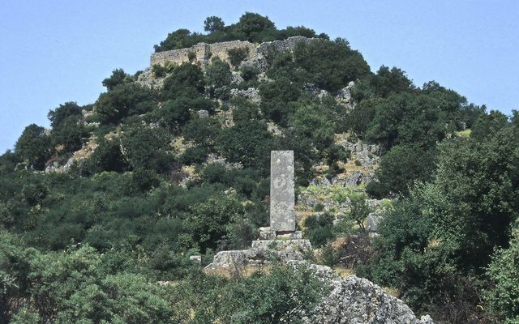

الرئيسية › أماكن تستحق الزيارة حسب الولاية › أنطاليا
يضم دليل Kültür Varlıkları 75 مكانًا في أنطاليا: 48 موقع أثري, 11 متحف, 6 قلعة ومبنى تاريخي, 3 شلال, 3 وادٍ عميق (كانيون), 2 موقع طبيعي, 1 مبنى ديني, 1 مسار مشي. ستجد أدناه أبرز الأماكن وخريطة والقائمة الكاملة.
⭐ أبرز الأماكن

1 · أنطاليا · موقع أثريموقع زانثوس الأثري
كانت زانثوس أهم مدن ليكيا ومركزها الإداري زمنًا طويلًا.

2 · أنطاليا · متحفمتحف أنطاليا
متحف أنطاليا من أشمل المتاحف الأثرية في تركيا، ويجمع كنوز بامفيليا وليكيا وبيسيديا.

3 · أنطاليا · موقع أثريأسبندوس
تقع أسبندوس على نهر كوبرو تشاي (يوريميدون القديم)، وتضم واحدًا من أفضل المسارح حفظًا في العالم القديم.
🗺 على الخريطة
📍 جميع الأماكن (75)
موقع أثري (48)
موقع زانثوس الأثريموقع أثري · UNESCOأسبندوسموقع أثري موقع باتارا الأثريموقع أثري
موقع باتارا الأثريموقع أثري موقع بيرغه الأثريموقع أثري
موقع بيرغه الأثريموقع أثري موقع سيده الأثريموقع أثري
موقع سيده الأثريموقع أثري مدينة سيدرا القديمةموقع أثري
مدينة سيدرا القديمةموقع أثري أنطاكية عند كراغوسموقع أثري
أنطاكية عند كراغوسموقع أثري أنتيفيلوسموقع أثري
أنتيفيلوسموقع أثري مدينة أبيرلاي الأثريةموقع أثري
مدينة أبيرلاي الأثريةموقع أثري
مدينة أبولونيا (ليكيا)موقع أثري مدينة أرياسوس الأثريةموقع أثري
مدينة أرياسوس الأثريةموقع أثري موقع أريكاندا الأثريموقع أثري
موقع أريكاندا الأثريموقع أثري إيديبيسوسموقع أثري
إيديبيسوسموقع أثري مدينة يوتابي الأثريةموقع أثري
مدينة يوتابي الأثريةموقع أثري مدينة كيكوفا الغارقةموقع أثري
مدينة كيكوفا الغارقةموقع أثري كيتاناوراموقع أثري
كيتاناوراموقع أثري مدينة كيانيا الأثريةموقع أثري
مدينة كيانيا الأثريةموقع أثري متحف الحضارات الليكية وموقع أندرياكي الأثريموقع أثري
متحف الحضارات الليكية وموقع أندرياكي الأثريموقع أثري موقع ليميرا الأثريموقع أثري
موقع ليميرا الأثريموقع أثري موقع ميرا الأثريموقع أثري
موقع ميرا الأثريموقع أثري موقع أوليمبوس الأثريموقع أثري
موقع أوليمبوس الأثريموقع أثري موقع فاسيليس الأثريموقع أثري
موقع فاسيليس الأثريموقع أثري مدينة فيلوس الأثريةموقع أثري
مدينة فيلوس الأثريةموقع أثري مدينة روديابوليس الأثريةموقع أثري
مدينة روديابوليس الأثريةموقع أثري سيبيداموقع أثري
سيبيداموقع أثري سلوقية بامفيلياموقع أثري
سلوقية بامفيلياموقع أثري مدينة سيلغه الأثريةموقع أثري
مدينة سيلغه الأثريةموقع أثري مدينة سيلينوس الأثريةموقع أثري
مدينة سيلينوس الأثريةموقع أثري مدينة سيليون الأثريةموقع أثري
مدينة سيليون الأثريةموقع أثري موقع سيمينا الأثريموقع أثري
موقع سيمينا الأثريموقع أثري مدينة سورا الأثريةموقع أثري
مدينة سورا الأثريةموقع أثري مدينة تيميوسا الأثريةموقع أثري
مدينة تيميوسا الأثريةموقع أثري موقع ترميسوس الأثريموقع أثري
موقع ترميسوس الأثريموقع أثري تريبيناموقع أثري
تريبيناموقع أثري تريساموقع أثري
تريساموقع أثري تيبيريسوسموقع أثري
تيبيريسوسموقع أثري كهف أوكوز إينيموقع أثريأكاليسوسموقع أثريأرنيايموقع أثريكهف بلديبيموقع أثريإيتيناموقع أثريغاغايموقع أثريإيسينداموقع أثريكانديباموقع أثريكوريدالاموقع أثريلاموسموقع أثريبيدنيليسوسموقع أثريإيدروسموقع أثري
كهف أوكوز إينيموقع أثريأكاليسوسموقع أثريأرنيايموقع أثريكهف بلديبيموقع أثريإيتيناموقع أثريغاغايموقع أثريإيسينداموقع أثريكانديباموقع أثريكوريدالاموقع أثريلاموسموقع أثريبيدنيليسوسموقع أثريإيدروسموقع أثريمتحف (11)
متحف أنطاليامتحف متحف ألانيامتحف
متحف ألانيامتحف متحف بيت أتاتورك في أنطاليامتحف
متحف بيت أتاتورك في أنطاليامتحف متحف أنطاليا الإثنوغرافيمتحف
متحف أنطاليا الإثنوغرافيمتحف متحف أنطاليا للألعابمتحف
متحف أنطاليا للألعابمتحف متحف القديس نيقولاوس التذكاريمتحف
متحف القديس نيقولاوس التذكاريمتحف متحف سيدهمتحفمتحف بيت أتاتورك في ألانيامتحفمتحف المقبرة القديمة في أنطاليامتحفمتحف إلماليمتحفمتحف التكية المولويةمتحف
متحف سيدهمتحفمتحف بيت أتاتورك في ألانيامتحفمتحف المقبرة القديمة في أنطاليامتحفمتحف إلماليمتحفمتحف التكية المولويةمتحفقلعة ومبنى تاريخي (6)
 قلعة ألانياقلعة ومبنى تاريخي
قلعة ألانياقلعة ومبنى تاريخي خان ألاراقلعة ومبنى تاريخي
خان ألاراقلعة ومبنى تاريخي بوابة هادريان (الأبواب الثلاثة)قلعة ومبنى تاريخي
بوابة هادريان (الأبواب الثلاثة)قلعة ومبنى تاريخي جسر كوبرو بازار (أسبندوس)قلعة ومبنى تاريخي
جسر كوبرو بازار (أسبندوس)قلعة ومبنى تاريخي البرج الأحمر (قيزيل قوله)قلعة ومبنى تاريخي
البرج الأحمر (قيزيل قوله)قلعة ومبنى تاريخي خان شاربساقلعة ومبنى تاريخي
خان شاربساقلعة ومبنى تاريخي